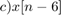

P03: Señales en Tiempo Discreto

UNIDAD PROFESIONAL INTERDISCIPLINARIA EN INGENIERÍA Y TECNOLOGÍAS AVANZADAS
Análisis de Señales y Sistemas
Autores: García Sandoval Juan Jesús y Pérez Miranda Jacob Isaías 2MV1
Profesor: Dr Rafael Martínez Martínez
Contents
Objetivos
Como objetivos principales de la práctica se pretende implementar la manipulación básica de MATLAB, así como la graficación de señales reales y complejas discretas, la transformación de señales discretas (escalamientos y traslaciones) y el cálculo de energía y potencia de señales discretas
Introducción
En la presente práctica se desarrollará una página web, en lenguaje html utilizando MATLAB.
MATLAB es un software matemático desarrollado por MathWorks y su nombre proviene de la Abreviación de MATrix LABoratory.
A lo largo de la práctica se abordará el procedimiento para tratar señales en tiempo discreto, para lo cual es importante describir el tratamiento para escalar horizontalmente este tipo de señales.
Para escalar horizontalmente una señal en tiempo discreto es necesario multiplicar el argumento por un escalar. Supongamos la función (figura 1 a) nosotros al multiplicar por un escalar mayor a 1 conseguimos que la señal se comprima horizontalmente, sin embargo, si multiplicamos por un escalar entre 0 y 1 consegumios que la función se expanda horizontalmente.
En la figura 1 b se muestra un ejemplo de una compresión horizontal, al multiplicar el argumento x2
En la figura 1 c se muestra un ejemplo de una expansión horizontal, al multiplicar el argumento x0.5

Figura 1. tomada de Linear Systems and Singnals de BP Lathi
1.
Se creó una función llamada fun1 la cual recibe dos parametros y para entonces regesar la evaluación como se muestra a continuación:
function [f ] = fun1( r,w )
syms n;
f=r^n*(cos(w*n)+sin(w*n)*1j)
end
A manera demostrativa, daremos los valores y
Fun=fun1(2,pi)
Fun = 2^n*(cos(pi*n) + sin(pi*n)*1i)
2.
Se creará una función que nos permita graficar con un estilo predefinido. En este caso se graficará el ejemplo ![$x[n]=na^nu[n]$](ASySPrac03JuanGarcia_eq14492615976455928922.png) vs y proponemos . La función se invoca de la siguiente manera: Figura(valores en x, valores en y, 'título del gráfico')
vs y proponemos . La función se invoca de la siguiente manera: Figura(valores en x, valores en y, 'título del gráfico')
close all n=-2:10; a=0.9; x=@(n) n.*(a.^n).*heaviside(n); Figura(n,x(n),'x[n]')
El código de la función Figura se escuentra en el apéndice 1
3.
Se creará una función que grafique funciones de . A maneraa de demostración se graficará la función del ejercicio 1:
close all
r=1.1;
w=0.5;
f=@(n) r.^n.*(cos(w.*n)+sin(w.*n).*1j);
FiguraCmplx(n,real(f(n)),imag(f(n)))
El código de la función FiguraCmplx se escuentra en el apéndice 2
también se reportará la gráfica de como sigue a continuación
mag=@(n) abs(f(n));
Figura(n,mag(n),'|f[n]|')
y la gráfica de
ang=@(n) angle(f(n));
Figura(n,ang(n),'<f[n]')
4.
Para este punto se ha elaborado la función energiadis, la cual recibe un vector tiempo y las alturas asignadas.
El código se ha implementado de la siguiente manera:
function [ E ] = energiadis( h) ff=h.^2; E=sum(ff); end
A manera de demostración se obtendrá la energía de la función planteada en el ejercicio 2:
E1=energiadis(x(n))
E1 = 81.3736
Y también lleva a cabo el cálculo de la energía de señales complejas como la del ejercicio 1:
E2=energiadis(f(n))
E2 = -6.7153 + 1.9690i
5.
Resolver el ejercicio 3.1.1.c) del Lathi
Find the energy of the signals depicted
close all clear all u=@(n) (n>=0 & n>=0); n=-5:5; x=@(n) n.*(u(n+3)-u(n-4)); Figura(n,x(n),'c)')
Para resolver este problema, unicamente debemos ejecutar la función desarrollada en el ejercicio 4:
energiadis(x(n))
ans =
28
6.
Resolver el ejercicio 3.2.3. del Lathi
For the signal shown, sketch the following signals:
close all clear all u=@(n) (n>=0 & n>=0); n=-12:21; x=@(n) (n.*(u(n)-u(n-4)))+((-n+6).*(u(n-4)-u(n-6))); Figura(n,x(n),'x[n]') axis equal xlim([-1 7]) ylim([-1 4])
![$a) x[-n]$](ASySPrac03JuanGarcia_eq04884917671509635024.png)
Figura(n,x(-n),'a)x[-n]') axis equal xlim([-7 1]) ylim([-1 4])
Figura(n,x(n+6),'b)x[n+6]') axis equal xlim([-7 1]) ylim([-1 4])

Figura(n,x(n-6),'c)x[n-6]') axis equal xlim([5 13]) ylim([-1 4])
Figura(n,x(3.*n),'d)x[3n]') axis equal xlim([-1 7]) ylim([-1 4])
uu=@(nn) (nn>=0 & nn>=0);
nn= 0:3:21;
xx=@(nn) ((nn./3).*(uu(nn)-uu(nn-10)))+(((-nn./3)+6).*(uu(nn-10)-uu(nn-18)));
Figura(nn,xx(nn),'e)x[n/3]')
xlim([-0 19])
ylim([-1 4])
Figura(n,x(3-n),'f)x[3-n]') axis equal xlim([-4 4]) ylim([-1 4])
Apéndices
Apéndice 1
function Figura(X1, Y1,titl) %CREATEFIGURE(X1, Y1) % X1: stem x % Y1: stem y
% Auto-generated by MATLAB on 15-Apr-2019 21:17:37
% Create figure
figure1 = figure;
% Create axes axes1 = axes('Parent',figure1); hold(axes1,'on');
% Create stem stem(X1,Y1,'LineWidth',2,'Color',[1 0 0]);
% Create title
title(titl);
% Set the remaining axes properties set(axes1,'Color',[1 0.968627452850342 0.921568632125854],'FontName',... 'Century Gothic','XAxisLocation','origin','XGrid','on','YAxisLocation',... 'origin','YGrid','on');
Apéndice 2
function FiguraCmplx(X1, Y1, Z1) %CREATEFIGURE(X1, Y1, Z1) % X1: stem3 x % Y1: stem3 y % Z1: stem3 z
% Auto-generated by MATLAB on 16-Apr-2019 14:35:55
% Create figure
figure1 = figure;
% Create axes axes1 = axes('Parent',figure1); hold(axes1,'on');
% Create stem3 stem3(X1,Y1,Z1,'LineWidth',2,'Color',[1 0 0]);
% Create xlabel xlabel('n');
% Create ylabel ylabel('Re');
% Create zlabel zlabel('Im');
view(axes1,[14.9 44.4]); box(axes1,'on'); grid(axes1,'on'); % Set the remaining axes properties set(axes1,'FontName','Century Gothic');
Referencias
- B.P. Lathi. (2005). Linear Systems and Signals. New York: Oxford University Press, Inc.
- Integral. 10 abril 2019, de MathWorks Sitio web: https://es.mathworks.com/discovery/integral.html
- Limit. 10 abril 2019, de MathWorks Sitio web: https://www.mathworks.com/help/symbolic/limit.html
- (2012). Juntas, pero no revueltas: sub-gráficas en una misma figura de Matlab . 10 abril 2019, de 5 minutos de Matlab Sitio web: http://5minutosdematlab.blogspot.com/2012/09/juntas-pero-no-revueltas-sub-graficas.html